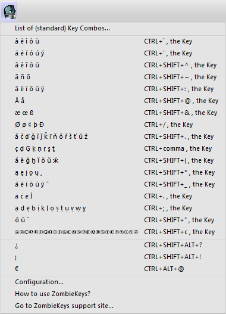

ZombieKeys, although originally written to be keyboard only, now has finally got a nice interface which makes it easier to use, especially for those who work with it for the first time.
Originally I only wanted to display the existing keyboard shortcuts sort of as a reminder, but I then realised that for some it might still be difficult to use them or understand the concept behind Zombiekeys.
Therefore I thought why not tie this in with an alternative interface that allows to access the shortcuts without pressing lots of modifier keys. And at the same time I would display the
shortcuts for the advanced users so one could switch to keyboard only when to much mouse activity was starting to get on one's nerves. :)

Another problem I had with Zombie Keys is that it was originally created with an American Audience in mind (or at least with those who had American keyboard layouts) so I set out how to remedy this.
This was a major undertaking as a lot of the hard coded hotkey combinations had to be reviewed for their usability due to the different location of dead keys such as ' or ~.
To best visualize this I decided to use some keyboard layouts from WikiPedia, and set up 2 main flavors to get started: UK and US English.
Once I get the code into a more generic state, other layouts may get added in the future
To switch the layout for using different shortcuts, select the "Configuration..." item from the Zombiekey menu.
This will display the configuration screen, which is currently just a selection for the language layout with a screenshot.
Just select a language and click Ok (Close).
You might have to restart Thunderbird / Firefox / Mozilla to fully activate the layout, as some parts of the UI are configured via XML and I currently have no way of influencing them directly.
Attribution: the images for these layouts come from https://en.wikipedia.org/wiki/Keyboard_layout
and are submitted to the licenses that are listed there. Please attribute them if you are going to use them in your own works / derivatives.
Click here for some diagrams that show the actual country specific shortcuts.
With this, I started to realize that there was a vast amount of diacritics espciallyu in slavic languages that were not even addressed by the original shortcuts that
currently supported by Microsoft Office (this is where the original Zombiekeys idea comes from). So I set out to make a more complete list; when you drop down the keyboard
on the Zombie Head you will pretty much see the characters that are (or should be) now supported by Zombiekeys:
Most of these were "mined" from the totally awesome Unicode Search at Fileformat.info.
This is a very valuable resource if you ever have to do anything exhaustive with special characters within the Unicode character set.
Be aware that a lot of cheap fonts do _not_ support displaying these characters correctly, it has to be a fully Unicode compliant font, such as Arial.
The official list of supported diacritics is as follows:
Grave Accent ̀
Acute Accent ́
Circumflex Accent ̂
Tilde ̃
Combining Diaresis (Umlaut) ̈
Combining Ring Above ̊
AE,OE,Sharp S
Long Stroke /
Caron (Hácek) ˇ
Cedilla ¸
Double Acute Accent ˝
Ogonek ˛
Macron ¯
Dot Above (Overdot) ˙
Combining Dot Below (Underdot) ̣
Version Details
All dates are displayed in UK format: dd/mm/yyyy - you can request any version that is marked as not released or any old version listed; just send me a personal email...
Mozilla is going to eventually terminate XUL based addons, so it is important that
our functionality stays supported on this Firefox fork. Here is a
Mozilla blog post
explaining their plans.
There are also some changes planned around a new programming model called
Electrolysis (e10s) which may break functionality of addons that try to insert content into any browser tab.
It may become the standard in a near future release of Firefox and would also affect Zombiekeys.
Please consider donating to help developing e10s compatibility
for the future of Firefox.
Known issue: Apparently there is still a problem with Iceweasel 38.7 under Linux - when pressing CTRL+ the ` key, it sets charCode (39) instead of keyCode (190).
Hopefully future support for custom layouts may fix the issue.
fixed [bug 24735]: In Gmail Compose Mail window shortcuts do not work, this affects Fx10+.
This bugfix apparently also works for Thunderbird 10's compose window, which was affected by the same bug.
overwrote global shortcut for Tab Group switching (CTRL+' becomes ALT+') thanks to Kent E. Soule
stability fixes for inserting into nodes that have no selectionStart etc.
fixed faulty duplication of aliveKeys (removes superfluous up event)
added § sign (use same dead key shortcut as for sharp s)
added overlay to following XUL windows: Search/Replace, common Dialog (Rename), Password Manager
added overlay to mail specific windows: Message Filter Editor, Edit Task/Event, Identity Settings, Folder Properties,
Mail Account Setup, Other Account Wizard, SMTP Server Settings, License Code (Postbox), Subscribe
added overlay to browser specific windows: Preferences (Options), All Histor, All Bookmarks, New Bookmark + Folder Properties
added support for some Add-Ons: Console2, QuickFolders, Save Password Editor, DOM inspector
Added icelandic thorn and eth characters
Added "circled" letters
Improved display of shortcuts on menu
Improved shortcuts for additional diacritics
added option to display key mappings in javascript console (not yet localized)
Support for new Postbox 3.0 beta
Known Issues
In the search box (only), Zombiekey letters are put in the wrong position. So far no idea why?
On clicking the Zombiekeys toolbar button the first time in a session, there is a noticable delay (3secs)
bumped compatibility to TB 3.1.*, FX 3.6 (27/06/2010)
Added Postbox 1.1 support
New Addon Icon.
I (Axel Grude) joined the development team and started to take over administration for the ZombieKeys project which was handled by Kai Bolay up to this date.
Support SeaMonkey 1.1 / SuiteRunner 1.5a - thanks to Philip Chee
added XBL binding to operate on chrome://global/content/platformHTMLBindings.xml#inputFields and derived elements - thanks to Arno Renevier and Philip Chee
QuickFolders
(Thunderbird / Postbox) takes the pain out of working with many mail folders; has currently 22,000 daily users and is the top rated message reading extension.
SmartTemplate4
SmartTemplate4
(Thunderbird) SmartTemplate4 offers an easy way to customize Thunderbirds default quote header by using templates. Templates can be created for every account as well as for global settings.
QuickPasswords
QuickPasswords;
this is a very neat and quick way to retrieve and use a growing number
of passwords, without displaying them on screen or having to re-type them.
quickFilters
quickFilters
(Thunderbird) Quickly generate mail filters on the fly, by dragging and dropping mails and analyzing their attributes.